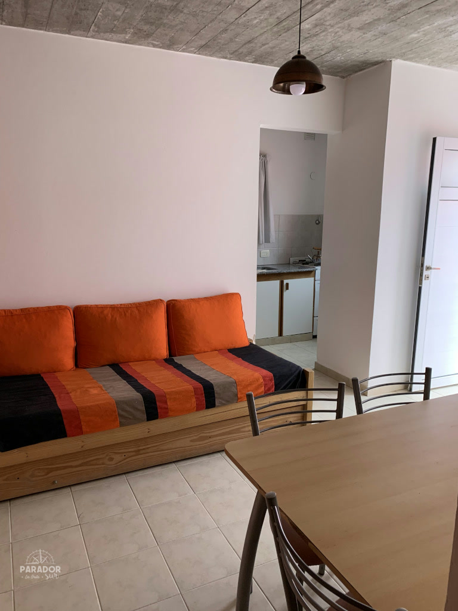

PARADOR SUR · LAS GRUTAS
Monoambientes
Dos unidades al frente para 2 a 4 personas, a tres cuadras del mar.
Consultar disponibilidad32 m²por unidad
2–4personas
3 cuadrasdel mar
Individualparrilla
RECORRÉ EL LUGAR
Todas las fotos.
Ambientes, cocina, baño, exterior y espacios de uso real. Tocá cualquier foto para verla completa.
¿Cuándo venís a Las Grutas?
Contale a Silvia tus fechas y te confirma disponibilidad.
Hablar con Silvia por WhatsApp